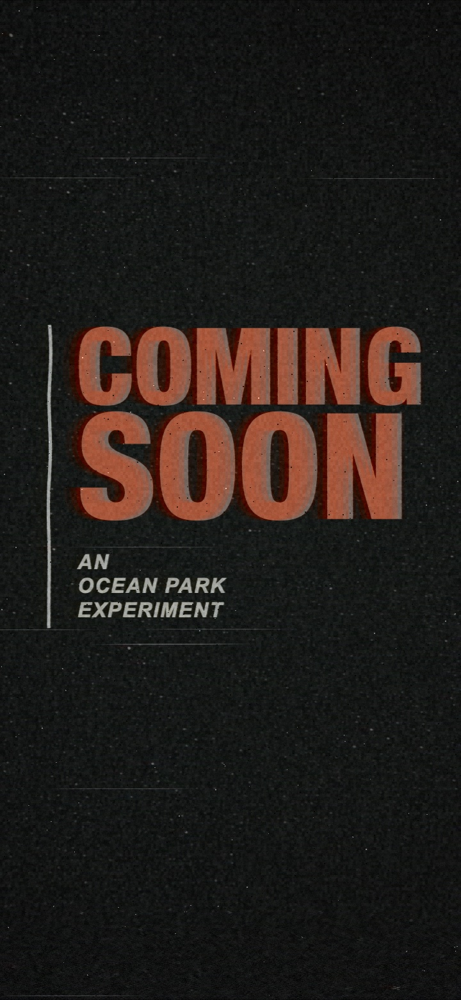
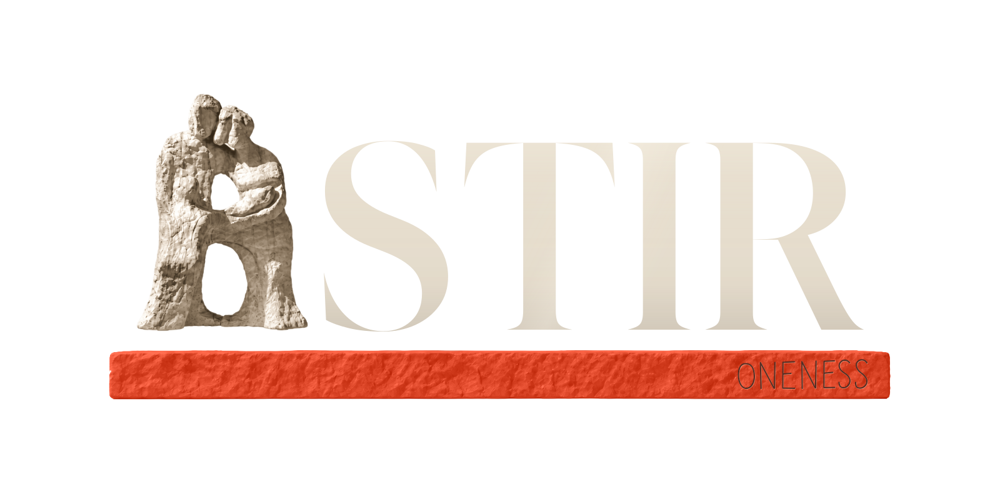

01 / THE SOURCE
Events
Approved 03C film. The reference for every texture and every tracking fault.
Open original video ↗ASTIR · MOTION & MATERIAL / 02
The same worn signal passes through the Events title, the sculpture, the lettering, and the account logo.
Approved 03C film. The reference for every texture and every tracking fault.
Open original video ↗Damage crosses the object itself. The original glyphs, sculpture and proportions stay intact.
Open splash video ↗The same material and signal faults on the smaller logo. The form stays steady.
Open account video ↗Loading the original source film…
LOOK CLOSER
Static wear is built into the image: rough density, softened edges, grain and chroma registration. Motion adds row tearing, tracking displacement and brief signal loss.
Use the frame slider to see the statue and letter edges break apart. “Static material” shows a stable, damaged print without flicker.
REUSABLE LIBRARY
The original eight-second source. Use as the field beneath native artwork, then apply the signal treatment to the artwork too.
Open texture video ↗
The approved palette, density, uneven edges and material. The splash continues to use its existing cream and Signal colors.
Read static texture brief ↗Local export writes the two preview clips and stills into this branch’s media folder.
